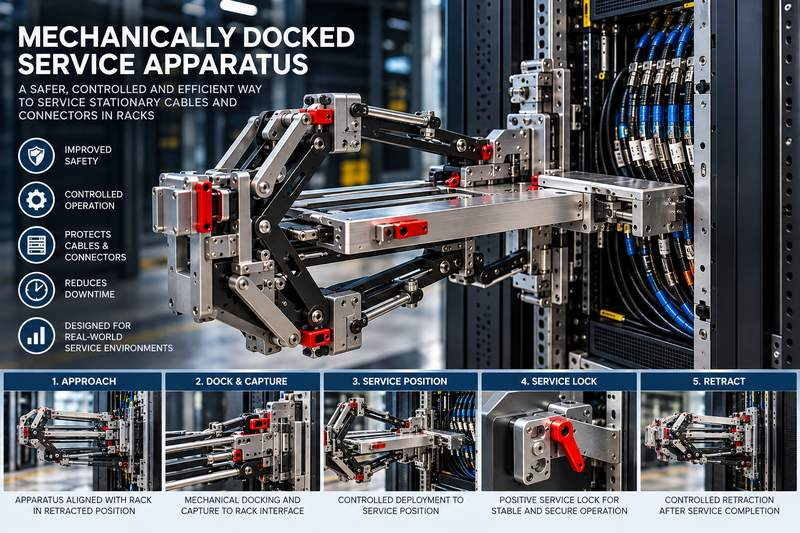

A mechanically controlled service apparatus designed to create a defined maintenance workspace around dense installed rack cable populations while keeping the installed cables outside the structural load path.

The reference architecture combines a structural rack dock, self-centering capture, independent secondary retention, synchronized mechanical deployment, a protected service volume, positive mechanical service locking and manual recovery.
Engineering-definition / prototype-development stage
The engineering package defines the reference architecture, design basis, load cases, safety logic, component schedule, reference drawings and verification requirements. Rack-specific interface closure, final manufacturing drawings, detailed analysis and physical validation remain part of the development path.